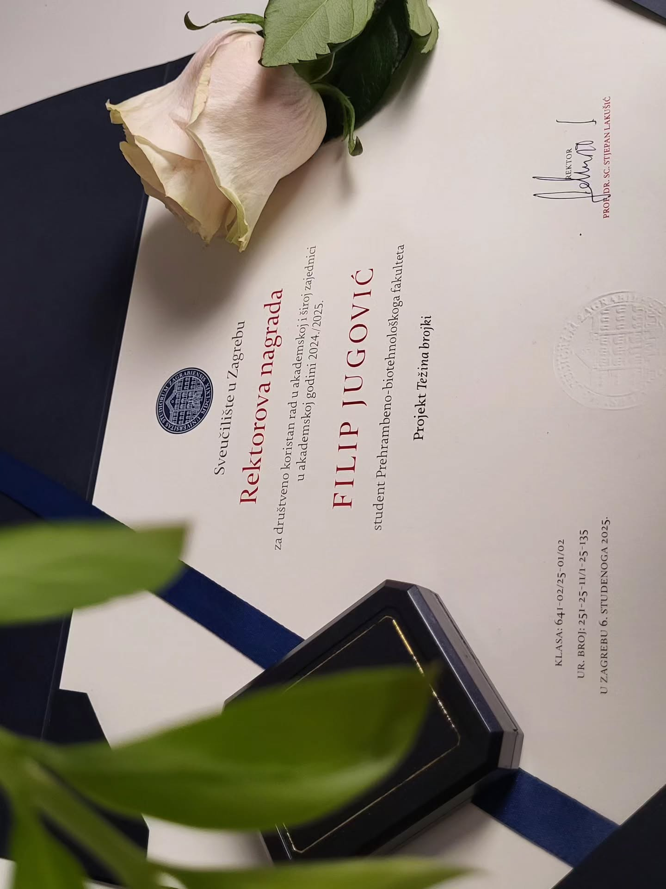

Tijekom akademskog školovanja Filip se isticao među svojim kolegama,
a kao dokaz upornosti i zalaganja dobio je mnoge nagrade i
priznanja. U više je navrata dobivao stipendiju za izvrsnost
Ministarstva znanosti i obrazovanja, Sveučilišta u Zagrebu te
zaklade Ivan Bulić. Dobitnik je Dekanove nagrade za izvrsnost za
vrijeme preddiplomskog studija, a svoje je znanje stjecao i van
akademskog okvira – volontiranjem u kliničkom okruženju,
prisustvovanjem stručnim kongresima te ljetnim školama u zemlji i
izvan granica Hrvatske. Za vrijeme preddiplomskog studija počeo se
više okretati sportskoj prehrani, svoj završni rad pod naslovom
„Količina, kvaliteta i vrsta proteina u prehrani bodybuildera“
napisao je 2022. godine te time postao sveučilišnim prvostupnikom
nutricionizma s velikom pohvalom (lat. magna cum laude). Filip je uz
tu počast prepoznat kao najbolji student generacije nutricionista,
za što je dodatno nagrađen drugom Dekanovom nagradom.
Po završetku preddiplomskog studija Filip se profilira kao stručnjak
u području nutricionizma i dijetoterapije te svoj daljnji rad
usmjerava prema učenju prirodnih metoda za prevenciju bolesti i
liječenje, čime svoj interes širi i van granica same znanosti o
prehrani. S tim u vezi Filip nastavlja svoje formalno školovanje na
diplomskom studiju Nutricionizam na Prehrambeno-biotehnološkom
fakultetu Sveučilišta u Zagrebu te paralelno 2022. godine upisuje i
studij Prirodne medicine* na američkom University of Natural
Medicine, New York. Pri kraju svojeg formalnog obrazovanja Filip
dobiva vrijedno iskustvo rada na nekoliko stručnih projekata na
fakultetu te na razini Sveučilišta. S kolegama nutricionistima,
kineziolozima te liječnicima provodi javnozdravstvene akcije preko
društvenih mreža te uživo na terenu u Zagrebu i okolici, čime biva
nagrađen Rektorovom nagradom za društveno koristan rad u akademskoj
i široj zajednici.

2025. godine brani svoj diplomski rad pod temom „Usporedba kvalitete
prehrane žena koje slijede biljne obrasce prehrane i žena svejeda
upotrebom upitnika o kvaliteti prehrane (DQQ)“ te stječe akademski
naziv magistra nutricionizma.
Filip danas radi u perspektivnom timu stručnjaka u području dodataka
prehrani, probiotika, fitoterapije i mikronutricije, s velikim
naglaskom na prirodna rješenja i individualni pristup. 2025. godine
nastavlja s užom specijalizacijom u području fitoterapije te upisuje
program u prestižnoj belgijskoj školi CERDEN.
Filip slobodno vrijeme provodi aktivno – bilo mentalno ili fizički.
Mentalno slobodno vrijeme teško je razlučivo od poslovnog jer
stalnim traganjem i čitanjem Filip pronalazi svoj mir. Tjelesno voli
dokučiti svoje psihičke i fizičke granice pa nerijetko uživa u dugim
biciklističkim stazama, plivanju, tjelovježbi, planinarenju. Posebno
mjesto Filip od djetinjstva čuva za šah. Od 2021. godine do danas
dio je fakultetske sportske ekipe i aktivno predstavlja boje
fakulteta u timu šahista s kojima je u više navrata osvajao odličja
na međustudijskim natjecanjima.
Uz brigu za ljudsko zdravlje, druga najveća Filipova ljubav je
povijest. Smatra kako je u najmanju ruku utrošio onoliko vremena za
izučavanje povijesnih tema, koliko je izdvojio vremena za formalno
visokoškolsko obrazovanje.
Za Filipa je velika strast istraživanje istine i manje istraženih
tema, a svoju osobnu specijalnost kasnovečernjih istraživanja duguje
upravo tome. Smatra kako postoji veliki jaz između istine i
realnosti, a u moru laži i površnih informacija smatra se odgovornim
– prvo kao čovjek pa potom i kao stručnjak u zdravstvu da donese
svjetlo u mračne odaje domova običnih ljudi. S tim ciljem 2025.
godine Filip pokreće multimedijsku platformu Svijet zdravlja, svijet
u kojem se otvara dijalog za sve teme, razgovara se o svim
problemima i najvažnije, gradi se bolji svijet za sve nas – Svijet
zdravlja.
Tijekom akademskog školovanja Filip se isticao među svojim
kolegama, a kao dokaz upornosti i zalaganja dobio je mnoge nagrade
i priznanja. U više je navrata dobivao stipendiju za izvrsnost
Ministarstva znanosti i obrazovanja, Sveučilišta u Zagrebu te
zaklade Ivan Bulić. Dobitnik je Dekanove nagrade za izvrsnost za
vrijeme preddiplomskog studija, a svoje je znanje stjecao i van
akademskog okvira – volontiranjem u kliničkom okruženju,
prisustvovanjem stručnim kongresima te ljetnim školama u zemlji i
izvan granica Hrvatske. Za vrijeme preddiplomskog studija počeo se
više okretati sportskoj prehrani, svoj završni rad pod naslovom
„Količina, kvaliteta i vrsta proteina u prehrani bodybuildera“
napisao je 2022. godine te time postao sveučilišnim prvostupnikom
nutricionizma s velikom pohvalom (lat. magna cum laude). Filip je
uz tu počast prepoznat kao najbolji student generacije
nutricionista, za što je dodatno nagrađen drugom Dekanovom
nagradom.
Po završetku preddiplomskog studija Filip se profilira kao
stručnjak u području nutricionizma i dijetoterapije te svoj
daljnji rad usmjerava prema učenju prirodnih metoda za prevenciju
bolesti i liječenje, čime svoj interes širi i van granica same
znanosti o prehrani. S tim u vezi Filip nastavlja svoje formalno
školovanje na diplomskom studiju Nutricionizam na
Prehrambeno-biotehnološkom fakultetu Sveučilišta u Zagrebu te
paralelno 2022. godine upisuje i studij Prirodne medicine* na
američkom University of Natural Medicine, New York. Pri kraju
svojeg formalnog obrazovanja Filip dobiva vrijedno iskustvo rada
na nekoliko stručnih projekata na fakultetu te na razini
Sveučilišta. S kolegama nutricionistima, kineziolozima te
liječnicima provodi javnozdravstvene akcije preko društvenih mreža
te uživo na terenu u Zagrebu i okolici, čime biva nagrađen
Rektorovom nagradom za društveno koristan rad u akademskoj i široj
zajednici.
2025. godine brani svoj diplomski rad pod temom „Usporedba
kvalitete prehrane žena koje slijede biljne obrasce prehrane i
žena svejeda upotrebom upitnika o kvaliteti prehrane (DQQ)“ te
stječe akademski naziv magistra nutricionizma.
Filip danas radi u perspektivnom timu stručnjaka u području
dodataka prehrani, probiotika, fitoterapije i mikronutricije, s
velikim naglaskom na prirodna rješenja i individualni pristup.
2025. godine nastavlja s užom specijalizacijom u području
fitoterapije te upisuje program u prestižnoj belgijskoj školi
CERDEN.
Filip slobodno vrijeme provodi aktivno – bilo mentalno ili
fizički. Mentalno slobodno vrijeme teško je razlučivo od poslovnog
jer stalnim traganjem i čitanjem Filip pronalazi svoj mir.
Tjelesno voli dokučiti svoje psihičke i fizičke granice pa
nerijetko uživa u dugim biciklističkim stazama, plivanju,
tjelovježbi, planinarenju. Posebno mjesto Filip od djetinjstva
čuva za šah. Od 2021. godine do danas dio je fakultetske sportske
ekipe i aktivno predstavlja boje fakulteta u timu šahista s kojima
je u više navrata osvajao odličja na međustudijskim natjecanjima.
Uz brigu za ljudsko zdravlje, druga najveća Filipova ljubav je
povijest. Smatra kako je u najmanju ruku utrošio onoliko vremena
za izučavanje povijesnih tema, koliko je izdvojio vremena za
formalno visokoškolsko obrazovanje.
Za Filipa je velika strast istraživanje istine i manje istraženih
tema, a svoju osobnu specijalnost kasnovečernjih istraživanja
duguje upravo tome. Smatra kako postoji veliki jaz između istine i
realnosti, a u moru laži i površnih informacija smatra se
odgovornim – prvo kao čovjek pa potom i kao stručnjak u zdravstvu
da donese svjetlo u mračne odaje domova običnih ljudi. S tim
ciljem 2025. godine Filip pokreće multimedijsku platformu Svijet
zdravlja, svijet u kojem se otvara dijalog za sve teme, razgovara
se o svim problemima i najvažnije, gradi se bolji svijet za sve
nas – Svijet zdravlja.